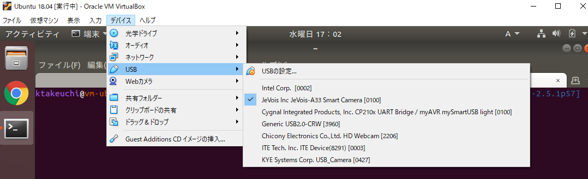
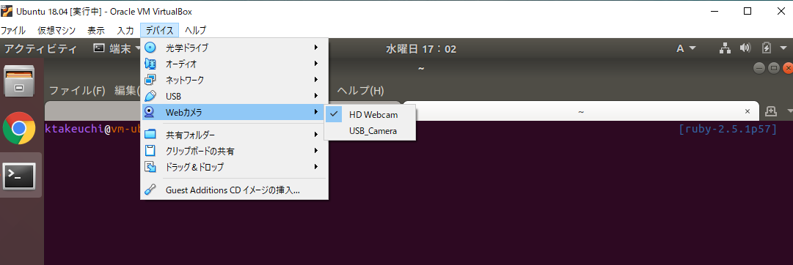
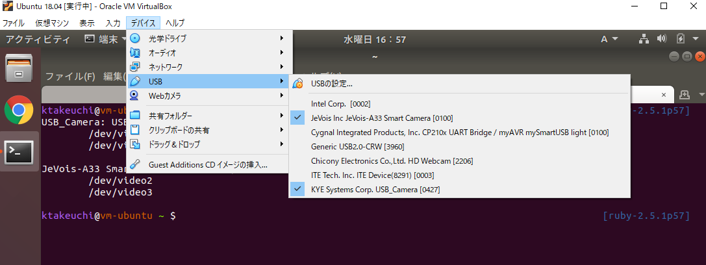

jevoisのC++開発環境を作成するために行ったことのメモ
もともとJeVoisで顔の特徴量を分析し、USBシリアル経由でホストマシンに送信するために、チュートリアルを読み漁っていたら、JeVoisに関する日本語のまとまった記事がなかったため、細かくメモを取ることにした。
Jevoisのプログラミングチュートリアルはこちらに掲載されており、Using the pre-installed jevois-sdk VirtualBox for developmentにC++開発環境の構築手順が載っていた。ただしすでに環境をビルド済みのVirtualboxコンテナの配布とインストール方法だけしか説明されておらず、中に何がインストールされているか分からないのは気持ちが悪いので、マニュアルで環境構築を行った。
マニュアルで環境を構築するために、こちらのページを参考にした。
1. VirtualboxでUbuntuの立ち上げ
使用したバージョンは以下の通り
- Windows 10 Pro (1909)
- Virtualbox 6.0.14
- Ubuntu 18.04 (bionic) Japanese Remix
Virtualboxの仮想環境設定
- メインメモリー : 8192 [MB]
- ストレージ : 64 [GB]
Ubuntuインストール後に、zsh環境と日本語リポジトリへの変更を行った (参考URL)
$ sudo sed -i.bak -e "s%http://jp.archive.ubuntu.com/ubuntu/%http://ftp.iij.ad.jp/pub/linux/ubuntu/archive/%g" /etc/apt/sources.list
$ sudo apt update
$ sudo apt upgrade
zsh環境はyadrを使用
$ sudo apt install -y zsh vim git curl rake
$ sh -c "`curl -fsSL https://raw.githubusercontent.com/skwp/dotfiles/master/install.sh `"
2. JeVois開発パッケージのインストール
jevoisの開発環境に必要なパッケージは以下の通り。詳細な使用方法は次の記事で検証する。
- jevois-opencv: Jevois本体で使用されているOpenCVに合わせて設定された、ホストコンピュータ(Ubuntu)ようにコンパイル済みのOpenCV(4.0.0)。このパッケージは
/usr/share/jevois-opencv-4.0.0にインストールされ、すでにインストールされている他のOpenCVを必要とするパッケージには干渉しない(らしい)。 - jevois-host: JeVoisをホストマシンで実行するためのコアソフトウェア
- jevois-platform: JeVoisのクロスコンパイルのためのコアソフトウェア。UbuntuでコンパイルしてJeVois本体で動かすバイナリーを生成する。
- jevoisbase-host: JeVoisのコンパイル済みベースモジュール。ホストマシンで動かすための関数群が定義されている
- jevoisbase-platform: JeVoisのコンパイル済みベースモジュール。こちらはJeVois本体で動かすためにクロスコンパイル時に使用される
- jevois-sdk: ブートローダー/ルートファイルシステム/その他設定ファイル。JeVois本体のSDカードに配置される？(詳細はまだ確認できていない)
- jevois-sdk-dev: JeVois本体開発のための、クロスコンパイラーやコンパイルのためのライブラリ
また、公式のGitHubリポジトリには以下のパッケージが配布されている。
- jevois: C++17のコアソフトウェア
- jevoisbase: マシンビジョンに使用されるJeVois専用モジュールが25個以上ある。
- samplemodule: JeVoisのサンプルモジュール。新しいモジュールを作成するときにテンプレートとして使用する。
- samplepythonmodule: samplemoduleのPython版。こちらも新しいモジュールの作成時にテンプレートとして使用される。
- jevois-sdk: JeVoisのカメラに挿入されているSDカードへデータを送信するための、LinuxカーネルとOSのフレームワーク。これを直接いじることは滅多になさそう
インストール手順はGitHubのjevoisリポジトリにINSTALLというファイルがあったので、こちらを参考にした。
https://github.com/jevois/jevois/blob/master/INSTALL
ファイルには上記で説明したようなことが長々と記載されている。インストール手順を簡単にまとめる。
2.1. JeVoisの配布リポジトリを登録する
$ sudo apt-key adv --keyserver keyserver.ubuntu.com --recv-keys DD24C027
$ sudo add-apt-repository "deb http://jevois.usc.edu/apt bionic main"
INSTALLにはbionicの代わりにxenialと記載されているので注意。ホストマシンはUbuntu18.04なのでbionicと書き換えた。
リポジトリを登録できれば、あとはパッケージリストのアップデートを行う。公式ではupgradeもしろと書いてあるので、念のため実行する。(たぶんあまり意味が無いような気がする)
$ sudo apt update
$ sudo apt upgrade
2.2. JeVoisの開発パッケージをインストールする
パッケージは先述の通り、jevois-hostやjevois-platformなどいろいろあるが、C++の開発とmicroSDへのフラッシュなど一通りやりたい場合は、jevois-sdk-devをインストールするらしい。
$ sudo apt install jevois-sdk-dev
自分の環境では、依存パッケージがインストールできないとエラーがでたので、依存解決してインストールするようにコマンドを実行した。
$ sudo apt install --fix-missing
Virtualboxを使用しているせいか、ネットワーク環境が悪いことでインストールに6時間もかかった。これにより、以下のパッケージがインストールされる
- jevois-opencv
- jevois-host
- jevois-platform
- jevoisbase-host
- jevoisbase-platform
- jevois-sdk
- jevois-sdk-dev
本章冒頭で解説したパッケージが一通りインストールされた。INSTALLには、132行目まで他のパターンでのインストール内容(Webカメラだけで開発したい場合など)が記載されているが、どれも上のパッケージリストの内包なので、特に確認は不要だと判断した。
3. jevois-daemon
インストールが完了したら、JeVois本体をホストマシンにUSB接続し、Virtualboxの「デバイス > USB > JeVois Inc. JeVois-A33 Smart Camera [0100]」を選択し、ホストからUbuntu仮想環境にマッピングしておく。また、Webカメラも仮想環境にマッピングする「デバイス > Webカメラ > HD Webcam」。


そのあと、jevois-hostとjevoisbase-hostに含まれるjevois-daemonを実行する。
$ jevois-daemon
jevois-daemonはホストコンピュータのWebカメラにアクセスし、様々なコマンドを受け付ける。例えば、
- info
- help
- listmappings
などがある。jevois-daemonを実行した状態で、下記のようにサンプルコマンドを実行してみた
> info
INFO: JeVois 1.14.0
INFO: Linux version 5.0.0-37-generic
コマンドを入力してから、そこそこ時間(30秒くらい)がかかってからレスポンスが標準出力された。最初はコマンドを受け付けてくれていないと感じたが、時間がかかっているだけのようだ。
jevois-daemonを終了するには、quitコマンドを実行する。Ctrl-Cでは終了できない。
> quit
Quit command received - bye-bye!
4. HelloJeVoisプログラムの実行
参考 : Hello JeVois
4.1. HelloJeVoisモジュールの作成とビルド
ホームディレクトリに戻り、HelloJeVoisという名前で新しいJeVoisのモジュールを作成する。
$ cd $HOME
$ jevois-create-module Tutorial HelloJeVois
Create module [HelloJeVois] from vendor [Tutorial] in new directory [hellojevois] (Y/n)? y
*** Cloning from samplemodule github...
Cloning int 'samplemodule'...
[以下略]
ちなみにjevois-create-moduleのヘルプを確認すると、ベンダー名とモジュール名を引数で指定するだけのコマンドであることが分かる。
$ jevois-create-module --help
USAGE: jevois-create-module <VendorName> <ModuleName>
jevois-create-moduleを実行すると、ホームディレクトリにhellojevoisという名前のディレクトリが作成された。
$ tree hellojevois
hellojevois/
├── CMakeLists.txt
├── COPYING
├── INSTALL
├── README
├── rebuild-host.sh
├── rebuild-platform.sh
└── src
└── Modules
└── HelloJeVois
├── HelloJeVois.C
├── icon.png
├── postinstall
└── screenshot1.png
hellojevois/src/Modules/HelloJeVois.Cがどうやらメインで書き換えるCのモジュールファイルになるらしい。ディレクトリ直下にはビルド用のシェルスクリプトが2種類あって、
rebuild-host.sh: ホスト環境のWebカメラでモジュールを実行する (デバッグ用？)rebult-platform.sh: JeVois本体で実行できるように、クロスコンパイルしてバイナリを生成する
をそれぞれ使用する。
クロスコンパイルはたいてい時間がかかるため、まずはホスト環境でデバッグ用に実行するためにビルドを実行する。
$ cd hellojevois/
$ ./rebuild-host.sh
-- JeVois version 1.14.0
-- JEVOIS_PLATFORM: OFF
-- JEVOIS_VENDOR: Tutorial
[以下略]
実行すると、CMakeが動いてコンパイルが完了する。コンパイルが完了すると、ビルドされたsoファイルが/jevois/modules/Tutorial/HelloJeVois/に自動的に配置される。どうやらホストマシンで実行するビルド済みモジュールは。/jevois/modulesディレクトリにすべてまとめて配置されるようだ。
ちなみにCMakeで生成されたmakeファイルはhbuildという新しくできたディレクトリ以下に作成されているため、再度コンパイルする場合は以下のようにコマンドを実行する。
$ cd hbuild
$ make
$ sudo make install
make installで、再度/jevois/modules/Tutorial/HelloJeVois/にビルド済みファイルが展開される。
4.2. ホストマシンのWebカメラでHelloJeVoisモジュールの実行
カメラの読み取り解像度や、出力解像度などのビデオマッピング情報は、/jevois/config/videomappings.cfgに記載する必要がある。コンフィグファイルを参考に、マッピング情報の列を追加した。
$ echo "YUYV 640 480 28.5 YUYV 640 480 28.5 Tutorial HelloJeVois" | sudo tee -a /jevois/config/videomappings.cfg
videomappings.cfgの末尾に設定が追加された。ちなみに設定のフォーマットと各パラメータは以下のようになる。
<USBmode> <USBwidth> <USBheight> <USBfps> <CAMmode> <CAMwidth> <CAMheight> <CAMfps> <Vendor> <Module> [*]
- USB_ : JeVoisで処理した画像をUSBシリアル経由で送信する際の設定
- CAM_ : JeVoisやWebカメラで読み込む画像の設定
- mode : YUYVやRGB565など、画像のピクセルフォーマット。USBのみMotionJpeg(MJPG)などが設定できる。
- width, height : 画像の縦横ピクセル数
- fpg : 処理最大速度 [/s]。画像サイズが小さい場合は60fpsくらいまで設定できるが、1280x1280など大きいピクセルの場合は15fpsくらいまでしか設定できない。
補足で、JeVoisのバージョンが1.14.0以上の場合はjevois-add-videomappingから設定を追加することが出来る
$ sudo jevois-add-videomapping YUYV 640 480 28.5 YUYV 640 480 28.5 Tutorial HelloJeVois
少し冗長な話になったが、追加したモジュールを実行してみる。実行にはjevois-daemonを使用。
$ jevois-daemon
> listmappings
...
22 - OUT : YUYV 640x480 @ 28.5fps CAM: YUYV 640x480 @ 28.5fps MOD: Tutorial:HelloJeVois
...
listmappingコマンドを実行すると、先ほど設定したマッピング情報が表示され、先頭にIDのような数値が付記されている。このIDを使用して、再度jevois-daemonをキーワード引数付きで実行する。また、UbuntuにはWebカメラとJeVoisがカメラとして認識されているため、Webカメラのデバイスファイルを指定する必要がある。
> quit
Quit command received - bye-bye!
$ v4l2-ctl --list-devices
VirtualBox Webcam - HD Webcam (usb-0000:00:06.0-3)
/dev/video0
/dev/video1
JeVois-A33 Smart Camera: JeVois (usb-0000:00:0b.0-1)
/dev/video2
/dev/video3
v4l2-ctlコマンドでカメラのデバイスファイルを確認すると、Webカメラは/dev/video0がデバイスファイルであることが分かった。jevois-daemonコマンドにデバイスファイルを指定して実行してみる。
$ jevois-daemon --videomapping=22 --cameradev=/dev/video0
INF Engine::onParamChange: Using [stdio] hardware (4-pin connector) serial port
INF Engine::onParamChange: No USB serial port used
ERR VideoMapping::videoMappingsFromStream: In file /jevois/config/videomappings.cfg:106: Camera video format not supported by sensor -- SKIPPING.
...
INF Engine::postInit: Loaded 61 vision processing modes.
INF Engine::postInit: Initalizing Python...
INF Engine::postInit: Starting camera device /dev/video4
INF Camera::Camera: [3] V4L2 camera /dev/video4 card VirtualBox Webcam - HD Webcam: bus usb-0000:00:06.0-2
INF Engine::postInit: Using display for video output
INF Engine::setFormatInternal: OUT: YUYV 640x480 @ 28.5fps CAM: YUYV 640x480 @ 28.5fps MOD: Tutorial:HelloJeVois C++
# ↓カメラのピクセルフォーマットがMJPGに設定されている
INF Camera::setFormat: Camera set video format to 640x480 MJPG
FTL Camera::setFormat: Camera did not accept the requested video format as specified
ERR Log::warnAndIgnoreException: Caught std::exception [FTL Camera::setFormat: Camera did not accept the requested video format as specified]
INF Camera::streamOn: 5 buffers of 1228800 bytes allocated
INF READY JEVOIS 1.14.0
実行していくら待っても何も表示されないのでログを確認してみると、カメラのピクセルフォーマットにMJPGを設定したと出ている。再度v4l2-ctlコマンドでwebカメラのピクセルフォーマットを調べてみた。
$ v4l2-ctl -f video4linux2 -d /dev/video0 --list-formats
ioctl: VIDIOC_ENUM_FMT
Index : 0
Type : Video Capture
Pixel Format: 'MJPG' (compressed)
Name : Motion-JPEG
どうやら自分のホストマシンに搭載されているWebカメラでは、YUYVに対応していないみたいだ。ビデオマッピングでカメラのピクセルフォーマットにMotion-JPEGを設定できないので、別のWebカメラをつないで実行してみると、YUYVのピクセルフォーマットに対応していた。

$ v4l2-ctl --list-devices
USB_Camera: USB_Camera (usb-0000:00:0b.0-1):
/dev/video0
/dev/video1
JeVois-A33 Smart Camera: JeVois (usb-0000:00:0b.0-2):
/dev/video2
/dev/video3
$ v4l2-ctl -f video4linux2 -d /dev/video0 --list-formats
ioctl: VIDIOC_ENUM_FMT
Index : 0
Type : Video Capture
Pixel Format: 'YUYV'
Name : YUYV 4:2:2
Index : 1
Type : Video Capture
Pixel Format: 'MJPG' (compressed)
Name : Motion-JPEG
再度jevois-daemonでUSBカメラに変更して実行する。
$ jevois-daemon --videomapping=22 --cameradev=/dev/video0
...
INF Engine::postInit: Loaded 61 vision processing modes.
INF Engine::postInit: Initalizing Python...
INF Engine::postInit: Starting camera device /dev/video0
INF Camera::Camera: [3] V4L2 camera /dev/video0 card USB_Camera: USB_Camera bus usb-0000:00:0b.0-1
INF Engine::postInit: Using display for video output
INF Engine::setFormatInternal: OUT: YUYV 640x480 @ 28.5fps CAM: YUYV 640x480 @ 28.5fps MOD: Tutorial:HelloJeVois C++
# ↓YUYVで設定できた
INF Camera::setFormat: Camera set video format to 640x480 YUYV
INF Engine::setFormatInternal: Instantiating dynamic loader for /jevois/modules/Tutorial/HelloJeVois/HelloJeVois.so
INF Engine::setFormatInternal: Module [HelloJeVois] loaded, initialized, and ready.
INF Camera::streamOn: 5 buffers of 614400 bytes allocated
INF READY JEVOIS 1.14.0
今度はカメラのピクセルフォーマットがYUYVに変更できた。
4.3. JeVoisでHelloJeVoisモジュールを実行する
ホストマシンの代わりに、JeVois本体にHelloJeVoisモジュールをクロスコンパイルでビルドする。
$ ./rebuild-platform.sh
ビルドが完了すると、`pbuildとjvpkgというディレクトリが作成される。モジュールを修正して再度ビルドしたい場合は、pbuildディレクトリに入ってmakeコマンドを実行すると、コンパイルされたファイルがjvpkgに作成される。
$ cd pbuild
$ make
$ make install
[ 33%] Generating ../src/Modules/HelloJeVois/modinfo.yaml, ../src/Modules/HelloJeVois/modinfo.html
[ 33%] Built target modinfo_HelloJeVois
[100%] Built target HelloJeVois
Install the project...
-- Install configuration: ""
Cannot access /dev/ttyACM0 -- is JeVois plugged in? -- ABORT
...
make installで、jvpkgディレクトリにビルドされたパッケージが作成され、USB経由でJeVoisのSDカードにコピーされる。しかし、/dev/ttyACM0にアクセスできないとエラーが表示された。
$ dmesg | grep ttyACM0
[ 4339.396412] cdc_acm 1-1:1.2: ttyACM0: USB ACM device
どうやらデバイスファイルへのアクセス権限がないようなので、下記を参考にパーミッションを調整する。
Connecting to JeVois using serial-over-USB: Linux host
まずは、Ubuntuではデフォルトで、modelmanagerがJeVoisに立ち上がる前からメッセージを送りまくっているため、modemmanagerを削除する。
$ sudo apt purge modemmanage
次に、自身のユーザーをdialoutグループに追加する。
$ sudo usermod -aG dialout $USER